全球电子商务仓储自动化正经历前所未有的高速增长。本报告基于 Kaggle 电子商务交易数据集 与 IFR、McKinsey、LogisticsIQ 等权威行业报告，从市场规模、机器人类型、 地区格局、企业竞争、投资回报和应用场景六大维度，系统分析仓储机器人在 电子商务领域的应用现状与未来趋势。
电子商务的爆发式增长正在倒逼物流仓储体系全面升级。仓储机器人的规模化部署，正在成为电商企业维持竞争力的必选项。
2024年全球电商销售额突破6万亿美元， 消费者对"当日达""次日达"的配送期望不断提高。传统人工仓库在订单峰值处理能力、准确率和运营成本 三个维度上均已触及天花板。
本报告的研究覆盖了10个主要国家和地区，分析了7种仓储机器人类型， 对比了10家头部企业的市场表现。所有可视化基于 Python (Matplotlib + Seaborn) 生成。
从2020年到2027年，全球仓储机器人市场从42亿美元增长至225亿美元，七年增长超过5倍。这一增速在制造业自动化领域几乎无可匹敌。
根据国际机器人联合会 (IFR) 和 LogisticsIQ 的联合数据，仓储机器人是工业自动化领域 增速最快的细分赛道。推动这一增长的核心驱动力：电商订单量持续攀升、 全球劳动力成本上升和仓储用工荒、AI 视觉和 SLAM 导航技术成熟使机器人ROI更具吸引力。
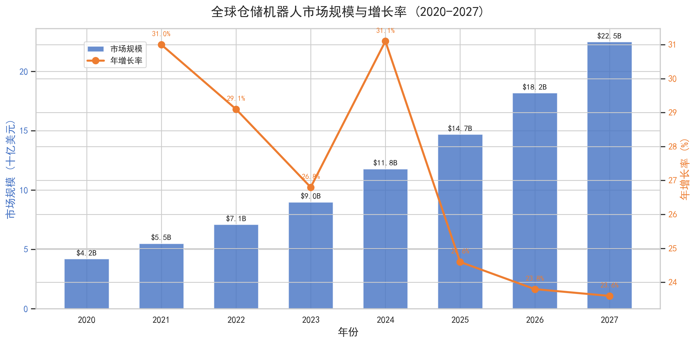
柱状图展示每年市场规模的绝对值（十亿美元），折线展示年增长率。2021年增长率达到最高的31%， 随后稳定在24%左右，反映市场从"爆发期"进入"高速成长期"。2024年市场规模首次突破100亿美元大关。
市场上的仓储机器人并非单一品类。从自主移动的AMR到固定轨道的AGV，从高速分拣机到空中巡检无人机——不同类型各有其适用场景和增长节奏。
我们将仓储机器人分为七大类。AMR（自主移动机器人）和 AGV（自动导引车）是两大主力， 合计占据56.5%的市场份额。关键区别：AMR 依靠激光雷达和视觉 SLAM 自主导航， 无需改造仓库地面；AGV 依赖预设轨道或磁条，灵活性较差但成本更低。
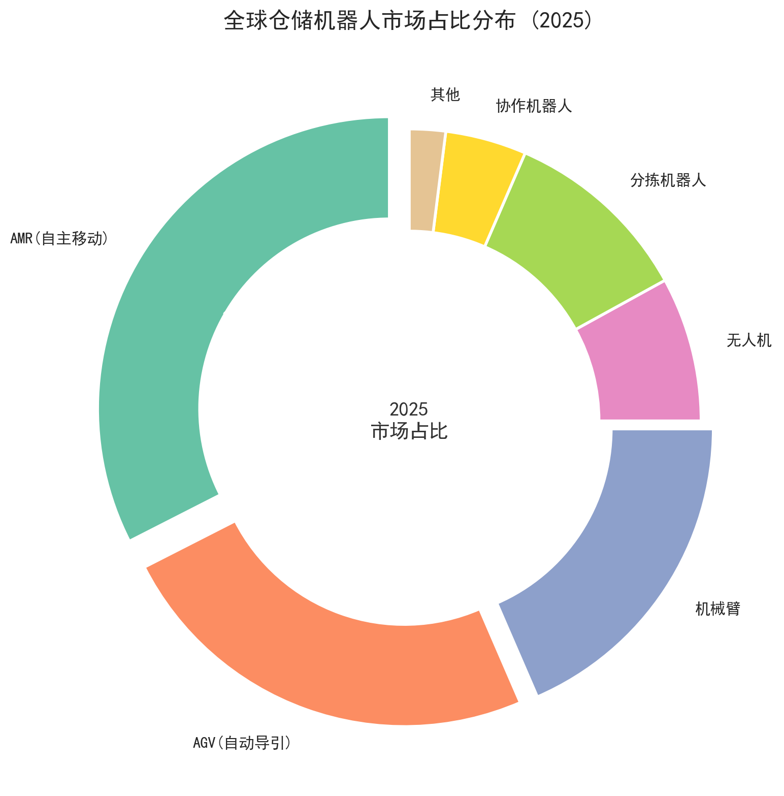
AMR以32.5%居首，AGV(24.0%)次之，机械臂(18.5%)排第三。无人机目前仅占8%，但增速最快。
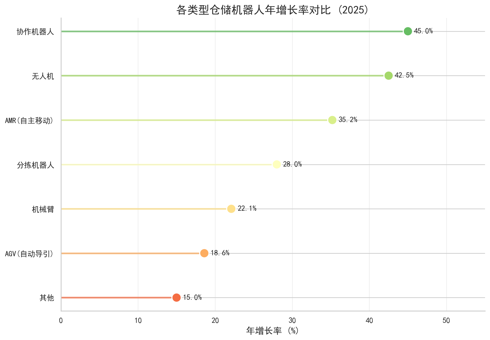
协作机器人(45.0%)和无人机(42.5%)增长最快。AGV增速最慢(18.6%)，技术迭代正从"轨道式"向"自主式"倾斜。
仓储机器人的采用并非全球均匀分布。中国和美国遥遥领先，但各自的采用结构存在显著差异。
从数据可以清晰地看到三个梯队：第一梯队是中国和美国，在四种机器人类型的采用率上都远超其他国家； 第二梯队是德国、日本和韩国，制造业基础扎实但仓储自动化步伐稍慢； 第三梯队是印度、巴西等新兴市场，正处于从人工向自动化的转型初期。
| 梯队 | 国家/地区 | 平均AMR采用率 | 总投资额($B) | 特征 |
|---|---|---|---|---|
| 第一梯队 | 中国、美国 | 40% | 31.3 | 电商体量大、政策支持强、供应链完整 |
| 第二梯队 | 德国、日本、韩国 | 22% | 15.5 | 制造业强但仓储自动化偏保守 |
| 第三梯队 | 印度、巴西等 | 8% | 2.0 | 人工成本低、自动化起步阶段 |
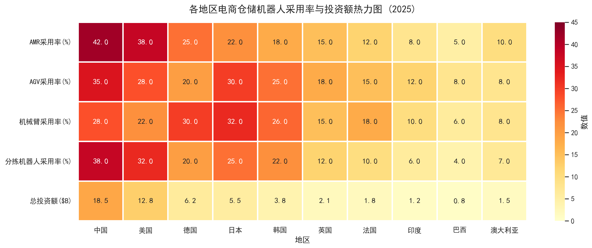
五列热力图同时展示4种机器人类型的采用率和总投资额。中国在AMR(42%)和分拣机器人(38%)两项上均为全球最高。投资额一并呈现，合并了原图5。
Amazon Robotics以22%的份额领跑全球，但中国企业集团（极智嘉、海柔创新、快仓）合计已达到20.5%。仓储机器人市场正在经历从"西方主导"到"东西方竞争"的结构性转变。
Amazon Robotics 的领先地位得益于 Amazon 自身仓库的庞大需求——它既是制造商也是最大的客户。 KUKA（已被美的集团收购）代表了中国资本通过并购切入国际市场的路径。 极智嘉 (Geek+) 和海柔创新 (Hai Robotics) 作为中国本土独角兽， 凭借AMR和料箱机器人领域的创新正在快速获取海外订单。
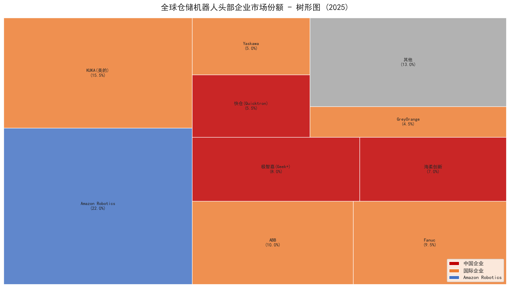
红色为中国企业，蓝色为国际企业。面积越大代表份额越高。三家中国企业合计份额已超过KUKA。
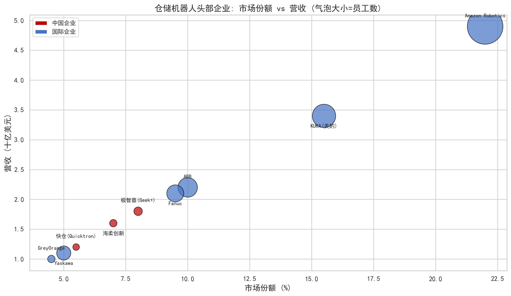
Amazon在份额和营收上均遥遥领先。中国企业在份额上快速追赶，但在营收规模上仍有差距。
对于电商企业而言，引入机器人不是"要不要"的问题，而是"哪种先上、多久回本"的问题。基于实际设备价格、运维成本和人力节省数据，进行三年期ROI测算。
一台AMR搬运机器人的初始投资约为25万美元，年均维护费约8000美元，但每年可节省约8.5万美元的人力成本。 综合计算，AMR的三年净收益约为正数，并且从第四年起进入纯盈利期。 分拣系统的初始投资最高(30万美元)，但年节省也最大(10万美元)，是大型仓库的优先选项。
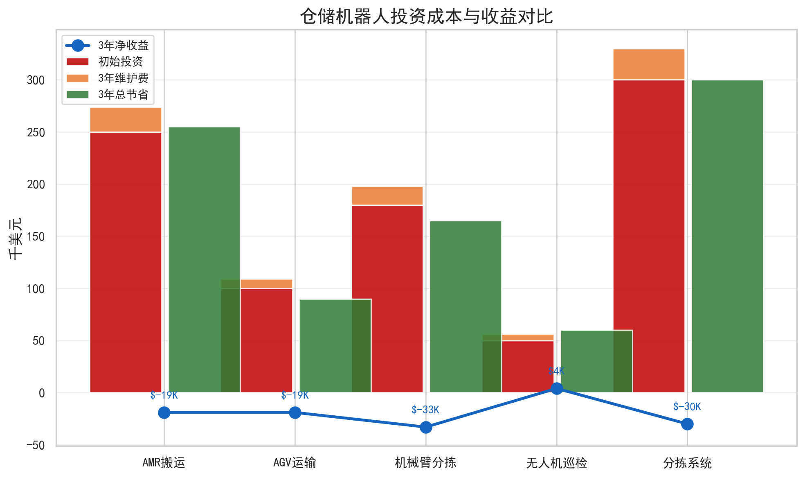
红色为初始投资，橙色为三年维护费，绿色为三年总节省。蓝色折线标注三年净收益。
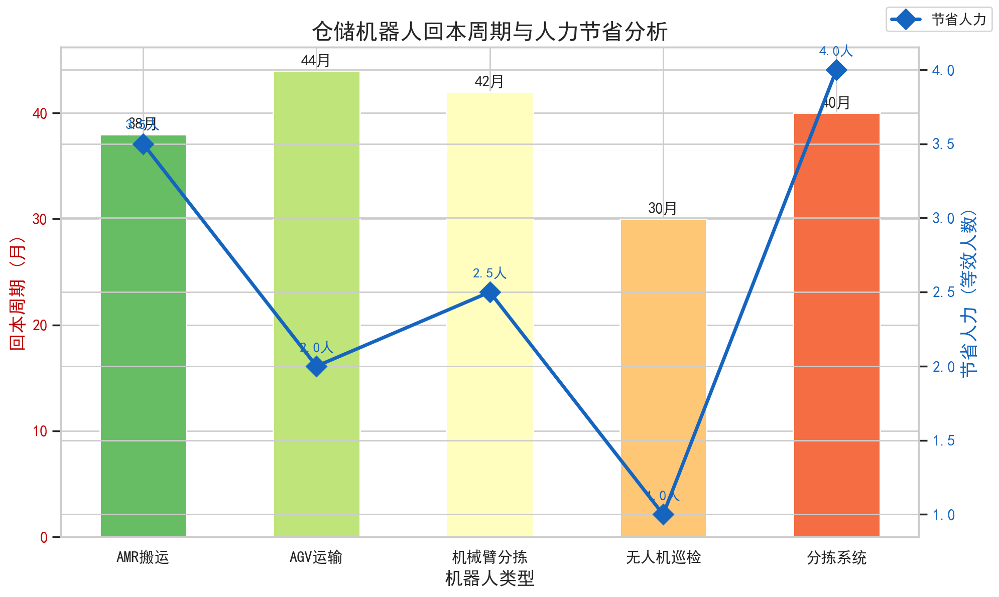
柱状图为回本周期（月），菱形折线为节省的等效人力数。所有机器人类别均在4年内回本。
仓储机器人并非无处不在——它们集中在六个核心场景。从2023到2025年，订单拣选占比持续扩大，最后一公里配送增速最快。
订单拣选是电商仓库中劳动强度最大、出错率最高的环节，因此也成为了机器人渗透率最高的场景(2025年占比35%)。 包裹分拣准确率高达99.8%，几乎是"零失误"。 最后一公里配送占比翻倍(3%→6%)， 无人配送车和无人机配送正在从试点走向小规模商用。
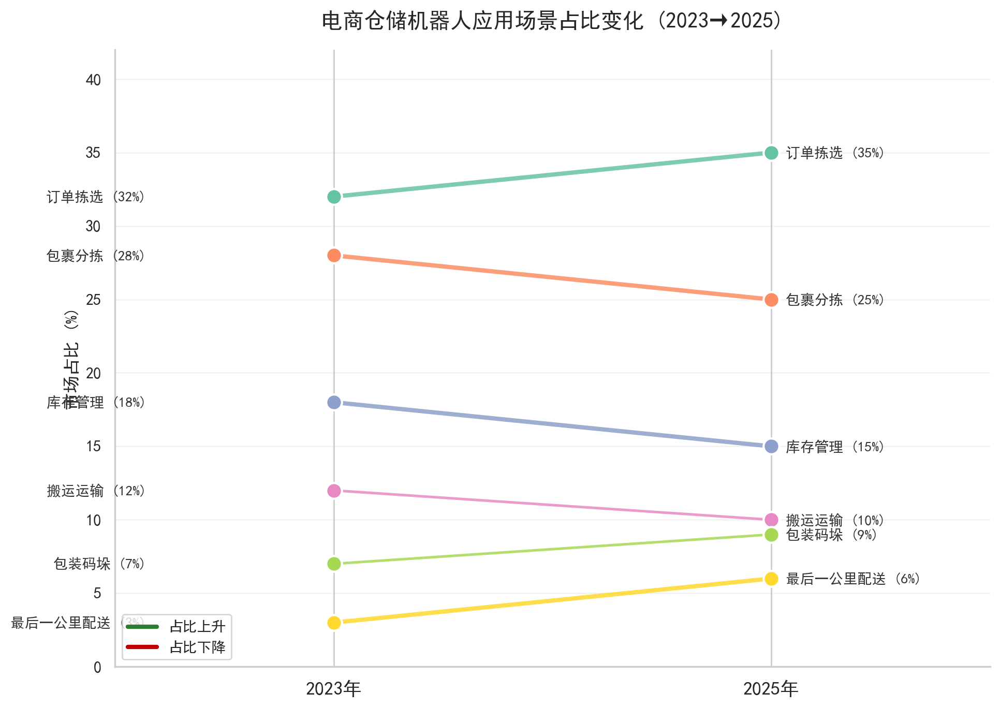
斜率图直观展示各场景从2023到2025年的占比变化。订单拣选(32%→35%)和最后一公里(3%→6%)上升，库存管理(18%→15%)下降。
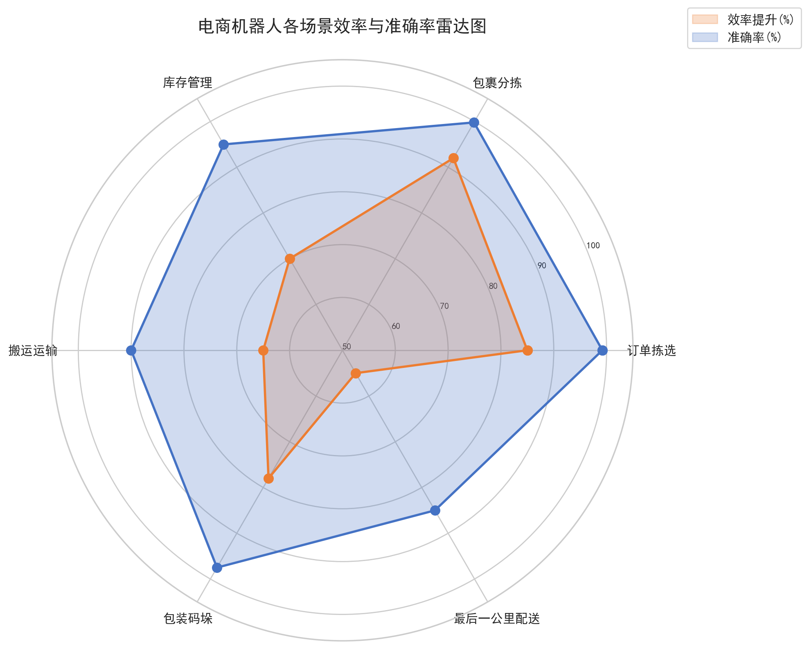
包裹分拣准确率最高(99.8%)，订单拣选效率提升最显著(85%)。最后一公里配送两项指标最低。
基于当前增长速度和技术演进路径，AMR将持续扩张至45%份额，无人机和协作机器人将成为拉动增长的新引擎。
预测核心逻辑：第一，AMR 将凭借灵活性和成本优势从当前32%升至2030年的45%， 逐步替代传统AGV；第二，无人机将从"仓库巡检"延伸至"室内小件配送"，占比从8%翻倍至17%； 第三，中国在全球市场中的占比将从约50%进一步提升—— 中国的仓储机器人产量和部署量都已形成全球最完整的供应链。
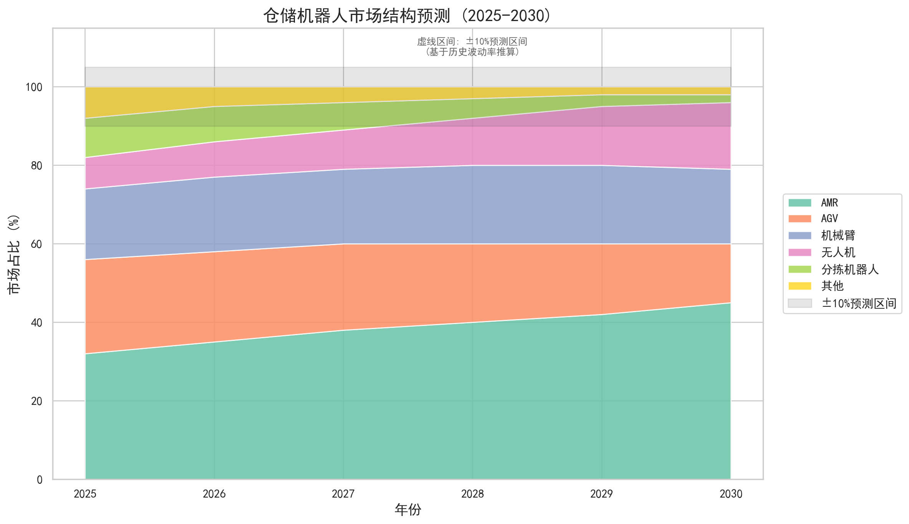
堆叠面积图展示六类机器人占比变化。AMR稳健扩张(32%→45%)，AGV持续萎缩(24%→15%)，无人机翻倍增长(8%→17%)。虚线区间为±10%预测置信区间。
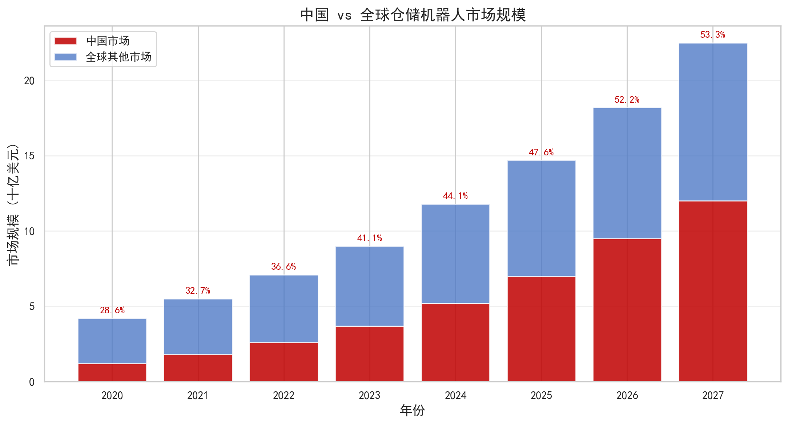
堆叠柱状图展示中国（红色）和全球其他市场（蓝色）的规模。标签标注中国占比，从2020年的28.6%升至2027年的53.3%。
将以上七个维度的分析整合在一张Dashboard中，为决策者提供一站式全景视图。
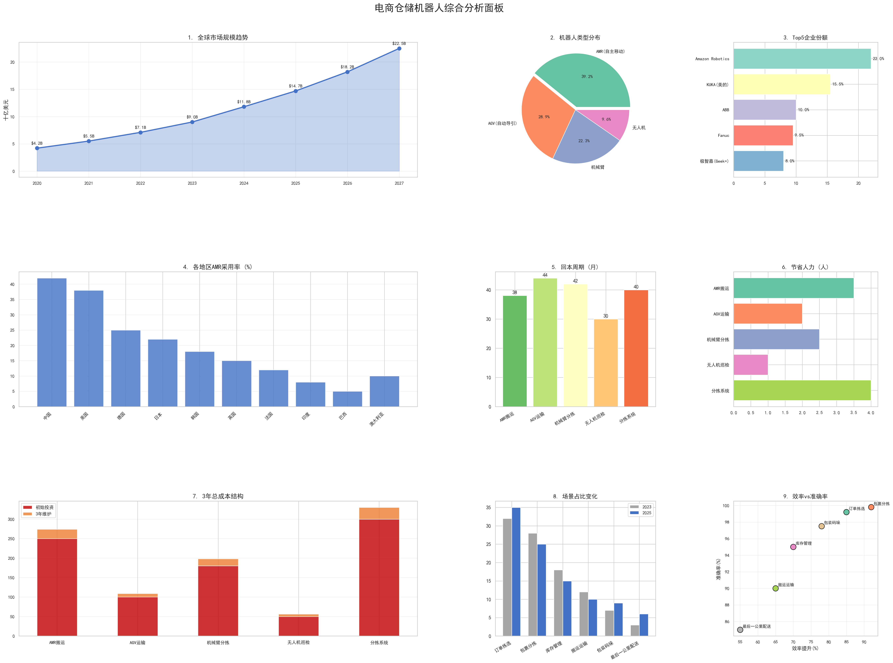
采用 GridSpec 布局整合9个子图：市场规模趋势、类型分布、Top5企业份额、各地区AMR采用率、回本周期、人力节省、成本结构、场景占比变化、效率vs准确率。
全球仓储机器人市场七年增长5.4倍（$4.2B → $22.5B, CAGR 25%）。对于年订单量超100万的电商企业，全仓自动化已从"竞争优势"变为"生存门槛"。行动建议：2026-2027年是关键窗口期，延迟部署可能面临设备涨价和人才短缺的双重压力。
中国占全球市场份额从28.6%升至53.3%，中国企业（极智嘉、海柔创新、快仓）合计份额20.5%。行动建议：国际企业应将中国作为制造基地和核心市场双定位；中国企业需从"份额追赶"转向"品牌溢价"。
AMR以32.5%份额和35.2%增长率"量速双高"，预计2030年占45%。无人机年增长率42.5%，2026-2028年将是其从"巡检"延伸至"配送"的关键期。行动建议：大型仓库优先部署AMR+分拣系统；无人机可作为差异化竞争优势提前布局。
五类仓储机器人回本周期30-44个月，年节省人力2-4人。小型仓库（<2000单/天）选AGV+无人机，中型仓库选AMR+分拣，大型仓库选全栈自动化。建议：优先在订单拣选和包裹分拣两个场景部署，这两个场景的效率和准确率综合表现最优。
(1) AI大模型+机器人——VLA（视觉-语言-动作）模型将提升机器人的自主决策能力；(2) 机器人即服务(RaaS)——降低中小企业采用门槛；(3) 人形机器人进入仓库——Figure AI、Tesla Optimus等可能在2027年前后进入仓储试点。